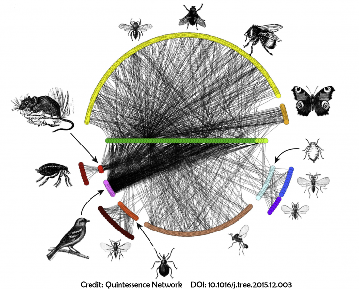

Probabilistic models for networks


Ecological networks are made up of nodes, representing biological entities of interest and edges representing the interaction being studied. Stochastic block models (SBMs) and their extension to bipartite networks are convenient tools to modelize heterogeneity in (ecological) networks by introducing blocks of nodes sharing the same pattern of connection. This short-course presents SBMs for unipartite, bipartite or more complex networks and illustrates their flexibility.
You will find here all the material I use for my 3 hours class on probabilistic models for network analysis.
- Here are the slides of the course
- This class will include a tutorial session.
- The tutorial is in R and can be found here
- It is mainly based on the R-package
sbm. Please find informations here. - Some additional R packages are needed.
- The tutorial will rely on the fungus-tree interaction network
studied by Vacher, Piou, and Desprez-Loustau (2008), available with the
package
sbm. - We will also use the dataset of Thompson and Townsend (2003) provided here
install.packages("sbm")
install.packages("GGally") # To plot networks
install.packages('network')
install.packages('RColorBrewer') # to have nice colors
install.packages('knitr') # to plot nice tables- Note that a shiny application is also proposed. You can either use it online here or install it on your machine
- The second part of the course will use the R package
colSBMavailable on Github.
Additional material on Stochastic Block Models can be found the book Chapter 6 Using Latent Block Models to Detect Structure in Ecological Networks in Aubert et al. (2022).